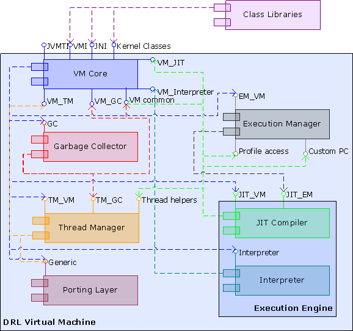
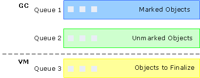
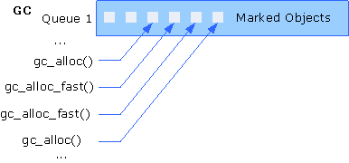
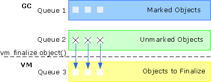

Intel, Nadya Morozova: document updated and expanded.
March 2, 2006
1.5
Sveta Konovalova: redundant legal notes removed.
November 22, 2006
2.0
Nadya Morozova: document restructured, component implementation
specifics removed, VM processes described in greater detail.
November 24, 2006
1. About
This Document
1.1 Purpose
This document introduces DRL, the dynamic run-time layer, explains
basic concepts and terms, and gives an overview of the product's
structure and interfaces for inter-component communication. Special
focus is given to the virtual machine, DRLVM. Use this document to
focus on the DRLVM implementation specifics and to understand the
internal peculiarities of the product.
The document describes version 1 of the DRL virtual machine donated in
March 2006.
1.2 Intended
Audience
The target audience for the document includes a wide community of
engineers interested in using DRLVM and in working further with the
product to contribute to its development.
1.3 Using
This Document
This document consists of several major parts describing the key
processes and components of the DRL virtual machine, as follows:
Architecture: description of VM
internal architecture, its components and their interaction
principles
Components: definitions of required VM
components, their role in the VM architecture
Processes: overview and step-by-step
description of key VM processes, from initialization to destruction
through stack walking, object finalization, and so on
The Dynamic Runtime Layer (DRL) is a clean-room implementation of the
Java* 2 Platform, Standard Edition (J2SE*) 1.5.0. This Java* run-time
environment consists of the virtual machine (DRLVM), and a set of
Java* class libraries (JCL). The product is released
in open source. The virtual machine is written in C++ code and a small
amount of assembly code. This document focuses on the virtual machine,
and gives a short overview of the class libraries supporting it.
Key features of DRL include the following:
Modularity: Functionality is grouped into a limited number
of coarse-grained modules with well-defined interfaces.
Pluggability: Module implementations can be replaced at
compile time or run time. Multiple implementations of a given
module are possible.
Consistency: Interfaces are consistent across platforms.
Performance: Interfaces fully enable implementation of
modules optimized for specific target platforms.
2.2 About
Components
The DRL virtual machine reconciles high performance with extensive use
of well-defined interfaces between its components.
2.2.1 Components,
Interfaces, and Instances
A component corresponds to one static or dynamic library, so
that several libraries linked statically or dynamically at run time
make up the managed run-time environment. For details on components
linking, see section 2.2.2 Linking
Models.
DRLVM components communicate via functional interfaces. An
interface is a pointer to a table of function pointers to
pure C methods. Interfaces have string names, which unambiguously
identify their function table layout. Each component exposes the
default interface to communicate with the component manager, and one or more
interfaces for communication with other components.
Note
In the current version, only the execution manager
uses the component manager. Other components will migrate to this new
model in further releases.
DRL can also operate with co-existing component instances, as the
Invocation API [7] requires. An
instance of a component contains a pointer to its default
interface and component-specific data. The porting layer always has exactly one
instance. This allows a compiler to inline calls to the porting layer
functions. Other components have the same number of instances as the
VM core does.
Background
In Java* programming, components, interfaces, and
instances can be described in terms of classes, interfaces and
objects. A VM component encapsulates common features, attributes, and
properties of virtual machines, and maps to a Java*
class. VM interfaces are tables of methods implemented and exposed by
the class. If several virtual machines exist in the same address
space, they all expose the same interfaces. These VM instances are
instances of the VM class, or objects.
The component manager enables
explicit creation of component instances by exposing the
CreateNewInstance() function, which corresponds to the
Java* operator new(). Components with
only one instance correspond to static class methods in Java*. All components are initialized at load time.
Subsequent sections define each component and provide information on
public interfaces, dependencies and other component specifics.
2.2.2 Linking Models
Libraries corresponding to different DRL components are linked by one
of the following models:
Unconditionally required components, such as the porting layer, are
plugged at the source level and linked statically to the main
executable. The same applies to the code that loads other
components; see section 2.3 Component
Manager.
Components required by the VM configuration, such as a specific
garbage collector or a JIT compiler, are loaded at run time based
on the configuration settings. For example, the virtual machine on
a multiprocessor system can load a more complex garbage collector
that takes advantage of parallel processing.
Third-party components shipped as dynamic libraries, such as the memory manager, are also loaded at
run time.
The component manager is a subcomponent of the VM core
responsible for loading and subsequent initialization of VM
components.
During the loading stage, the component manager queries the default
interface from each loading component, and then makes this information
available at the initialization stage via interface queries. The
component manager also enables instance creation for interfaces.
Currently, only the execution manager uses the component manager
loading scheme.
2.4. Package Layout
The general distribution of source code in the package is to have a
directory for each major component, such as jitrino/ for
the just-in-time compiler and port/ for porting
functionality. For a comprehensive list of the current DRLVM package
layout, consult the README file in the root directory of the source
package.
2.5 Data Structures
This section provides an overview of data structures in DRLVM, typical
examples of data structures, and the exposed data layout of public
data structures.
In DRLVM, all data structures are divided into the following groups:
Private data structures can only be used inside a specific
DRLVM component. Other components can only access such data
structures via exported component interfaces.
Public data structures shared across different DRLVM
components as listed in this section.
For example, when compiling an access operation to an instance field,
the JIT calls the public VM_JIT interface function to
obtain the offset, and uses the result to generate the appropriate
load instruction. Another example is the VM core internal
representation of a class object.
2.5.1 Object Layout
DRLVM exports data structures in accordance with the JNI [5] and JVMTI [4]
standards. In addition to these structures, DRLVM shares information
about an object layout across its components. In particular, the
Java* Native Interface does not specify the structure
of jobject, but DRLVM defines it internally as
illustrated below.
The jobject structure contains the following elements:
The vt field points to the object virtual-method
table.
Each class has one
virtual-method table (VTable) with class-specific
information to perform common operations, such as getting
pointers to virtual methods. The VTable is shared across all
instances of a class. During garbage collection, the VTable
supplies such information as the size of the object and the
offset of each reference stored in an instance.
The obj_info field is used during synchronization and
garbage collection. This is a 32-bit value on all supported
architectures. This field also stores the hash code of an instance.
Class-instance fields immediately follow the vt and
obj_info fields. Representation of array instances is
shared between the garbage collector and the JIT compiler. The VM core
determines the specific offsets to store the array length and the
first element of the array. This way, the VM core makes these fields
available for the garbage collector and the JIT via the VM interface.
Example
The excerpt of code below illustrates the usage of an object structure
in DRLVM for the GetBooleanField() JNI function.
typedef jobject ObjectHandle;
jboolean JNICALL GetBooleanField(JNIEnv *env,
jobject obj,
jfieldID fieldID)
{
Field *f = (Field *) fieldID;
/* Initialize the class if the field is accessed */
if (!ensure_initialised(env, f->get_class())) {
return 0; /* Error */
}
ObjectHandle h = (ObjectHandle) obj;
tmn_suspend_disable(); //-- Do not allow GC suspension --v
Byte *java_ref = (Byte *)h->object;
jboolean val = *(jboolean *)(java_ref + offset);
tmn_suspend_enable(); //--------------------------------^
return val;
} // GetBooleanField
2.5.2
Compressed References
To decrease memory footprint on 64-bit platforms [11], direct object and VTable pointers are
compressed in an object to 32-bit values.
To calculate a direct heap pointer, the system adds the pointer to the
heap base to the compressed value from the reference field. Similarly,
a direct pointer to an object VTable consists of the compressed value
stored in the first 32 bits of the object and of the base VTable
pointer. This limits the maximum heap size to 4 GB, but significantly
reduces the average object size and the work set size, and improves
cache performance.
Apart from the basic assumptions about object layout and the VTable
cache, all interaction between major DRLVM components is achieved
through function calls.
This part of the guide defines required virtual machine components and
gives an overview of their interaction.
3.1 Component
Structure
Figure 1 below displays the major DRL components and their interfaces.

Figure 1.
Major DRL Components
Figure 1 demonstrates the Java* run-time environment
(JRE) that consists of the Java* class
libraries (JCL) constituting the application programming interface
(API) and the Java* virtual machine with a number of
subcomponents listed below. In Figure 1, each component has a
different color. Interfaces exported by a component and calls that
this component does to interfaces of other components are marked with
the component color. Rectangles are used to show what supplementary
terms designate.
Currently, the DRL virtual machine consists of the following
components:
The VM core with its subcomponents
concentrates most of the JVM control functions.
The execution engine is the generic term for
components that execute bytecode or prepare it for execution. DRLVM
currently features the following execution engines:
The execution manager selects the execution
engine for compiling a method, handles profiles and the dynamic
recompilation logic.
The garbage collector allocates Java* objects in the heap memory and reclaims unreachable
objects using various algorithms, for example, gc_gen
is a generational garbage collection and gc_v4 uses
the mark-compact garbage collection algorithm.
The porting layer hides
platform-specific details from other VM components behind a single
interface. In the current implementation, the porting layer is
based on the Apache Portable Runtime layer [14].
Depending on the configuration, you can use multiple execution engine
components, for example, an interpreter and optimizing JIT.
Simultaneous use of multiple JIT compilers can provide different
trade-offs between compile time and code quality. You can aslo plug in
your custom components instead of the ones DRLVM includes by default,
provided that your components exports the required interface
functions. For an example of plugging in a custom garbage collector,
see How to Write DRL GC.
The VM core consists of common VM blocks defined by the JVM
specification [1] and of elements specific
for the DRLVM implementation, as follows:
The kernel classes component includes
a subset of the Java* class library closely tied
with the virtual machine. Kernel class native methods are exported
as ordinary native methods from the VM executable to link the
Java* kernel classes with other DRLVM components
and for class library purposes.
The JNI support component supports
execution of native methods for Java* classes
implements the Java* native interface API [5].
The JVMTI support component enables
loading of the debugging agent, and provides functionality for
running debug scenarios, see the JVM Tool Interface Specification
[4].
Class support is responsible for class
loading and related procedures.
VM services is an abstract term that
denotes run-time and compile-time utilities provided by the VM core
for the JIT compiler, the garbage collector and the class library
natives.
Utilities are a set of functions used by
the VM core during normal operation.
The verifier component responsible for verification procedures.
The VM kernel classes link the virtual machine with the Java* class libraries (JCL), and consist of the Java* part and the native part. Examples of kernel classes
include java.lang.Object and
java.lang.reflect.Field. For details on the current
implementation, see the Kernel Classes
document.
The native code support component consists of two parts: execution of
native methods used by Java* classes, and an
implementation of the Java* Native Interface (JNI)
API for native code. Execution of native methods is defined by the
Java* Language specification [2] and JNI is defined by the JNI
specification [5].
Execution of Native Methods
The virtual machine calls native methods differently with the
JIT and with the interpreter as described below.
In the interpreter mode, native code is called
directly with static stubs, and the interpreter performs all
the operations done by wrappers in the JIT execution mode.
In the JIT mode, the virtual machine generates special
wrappers for calling native methods, which perform
synchronization for synchronized native methods and record
information for stack unwinding and enumeration of references
used in native code. The wrapper code is generated for a
native method when the method is called for the first time,
and further on, the wrapper is called from JIT-compiled code
directly.
For optimization purposes, the current implementation uses
an inline sequence of instructions to allocate and initialize
JNI handles directly. This improves performance of
applications that contain multiple JNI calls.
JNI Support
The Java* Native Interface is a set of
functions, which enable native code to access Java* classes, objects, methods, and all the
functionality available for a regular method of a Java* class.
The JNI implementation mostly consists of wrappers to different
components of the virtual machine. For example, class operations
are wrappers for the class support component, method calls are
wrappers that invoke the JIT or the interpreter, and object
fields and arrays are accessed directly by using the known
object layout.
Example
The following code is implementation of the
IsAssignableFrom JNI function, which uses the class
support interface:
This code fragment shows a wrapper to the class loader internal function
class_is_subtype(), which checks whether a class
extends another class. This function works with internal class
loader type Class, which is an internal
representation of the loaded class instance. To obtain a pointer
to the Class instance, the code uses
jclass_to_struct_Class() class loader interface
functions. TRACE2 is a call to VM
logging facilities.
In DRLVM, the JVMTI support component implements the standard JVMTI
interface responsible for debugging and profiling.
The DRLVM implementation of JVMTI mostly consists of wrapper
functions, which request service and information from other VM parts,
such as the class loader, the JIT, the interpreter, and the thread
management functionality. Another part of JVMTI implementation is
written for service purposes, and comprises agent loading and
registration, events management, and API extensions support.
The JVMTI support component is responsible for the following groups of
operations:
Debugging: control of threads and thread groups, stack
inspection, local variables access, access to information on
objects and classes, fields and methods, support of breakpoints,
and JNI function calls interception
Profiling: classes redefinition for Java*
bytecode instrumentation
General: getting VM capabilities, registering event
callbacks, requesting supported API extensions, and other
operations
Note
The debugging and profiling functionality of the JVMTI support
component rely on support from execution engines.
See tutorial Creating a Debugging and Profiling Agent with
JVMTI [8] for examples of JVMTI API
usage.
In DRLVM, the class loading process goes in accordance with the JVM
specification [1] and includes class
loading, class preparation, resolution, and initialization operations.
The VM interface responsible for class support also contains several
groups of functions that other VM components use to get information on
loaded classes and other class-related data structures. For example,
JVMTI functions RedefineClasses() and
GetLoadedClasses() use utility interfaces provided by
class support.
The class support component has the following major goals:
Load binary class data from .class files and
.jar archives from the bootstrap class loader
Create internal (VM) representations of classes from byte arrays
Provide access to information on classes, methods, and fields for
various VM modules
Provide instruments for class redefinition and class support
related events required for JVMTI
Communicate with the verifier on verification of methods bytecode
Classification of
Class Support Interfaces
Class support functions can be divided into the following groups:
Class Loading
Comprises functions for loading classes, searching for loaded
classes inside VM structures, and JVMTI class redefinition. The
functions obtain bytes from the Java* class
libraries via the descendants of the
java.lang.ClassLoader class or from the files and
directories listed in the vm.boot.class.path
property. These functions also bind loaded classes with the
defining class loader and provide information on all loaded
classes.
Class
Manipulation
Provides access to class properties, such as the internal (VM)
and the external (Java*) names, access and
properties flags, the super-class and the defining class, as
well as super interfaces, inner classes, methods, fields, and
attributes.
Supports class resolution by resolving symbolic
references in the run-time constant pool of the class.
Method
Manipulation
Provides access to the properties of methods of a class, such as
the name of the method, descriptor, signature, access and
properties flags, bytecode, local variables information, stack,
exceptions, handlers, attributes, and the declaring class.
Functions of this group also enable adding new versions of
JIT-compiled methods code and storing service information about
compiled code.
Field Access
Contains functions that provide access to the properties of
class fields, that is, to the name, descriptor, containing
class, and the class of the field.
Type
Access
Provides access to generalized information on classes for the
JIT compiler and other DRLVM components. These can easily be
adapted to work with non-Java* virtual
machines, for example, with the ECMA Common Language
Infrastructure. Type access functions provide descriptions of
both Java* types, such as managed pointers,
arrays, and primitive types, and non-Java*
types, such as non-managed pointers, method pointers, vectors,
unboxed data, and certain unsigned primitive types.
Internal Class Support Data
Structures
The VM core stores information about every class, field, and method
loaded as described below.
Class data structure includes attributes of the class
(public, final, and abstract attributes, the element type for an
array class, and others), information about inner classes,
references to static initializers, and references to finalizers.
The structure also references the virtual-method table (VTable) of
the class shared by all instances of that class.
Field data structure includes reflection information, such
as name, type, and reference to the declaring class, as well as
internal DRLVM information, such as the fields offset from the base
of the object for instance fields and the fields address in memory
for static fields.
Method data structure contains compiled method code and the
information on methods similar to the field data structure content.
VM services is an abstract term that denotes various service functions
that the VM core provides for external DRLVM components. The current
implementation has no exact match to VM services in the code, but
rather an assembly of support functions. Below is the list of
currently provided the VM services grouped by the time when they are
requested.
Compile-time Services
During compile time, the JIT compiler uses the following VM
services:
The dump services for dumping generated stubs
and methods to the file in a human readable form.
Services providing access to the hash table of all loaded
methods.
Catch handler registration used by the JIT to provide
information for the VM exception handling mechanism.
Services providing access to method code chunks.
Services providing access to a method information block with
data managed by a specific JIT compiler. For example, Jitrino
stores stack maps and garbage collection status in the block.
Management of blocks of compiled code.
Certain services make a part of class support interface, for
example, type management and class resolution. For details, see
section 3.2.4 Class Support.
Run-time
Services
JIT-compiled code accesses the following groups of services at
run time:
With M2nFrames: Calls to these functions
push M2nFrames to the top of the stack to store an initial
stack state for exceptional stack unwinding and local
references for root enumeration purposes. These services can
perform all the operations of an ordinary JNI function. The
group consists of the following operations:
Throwing exceptions, including special services to
throw lazy exceptions and standard exceptions
Synchronization primitives
Launching class initialization
Implementing checkcast() and
instanceof() checks
Creating arrays, including multidimensional arrays
Without M2nFrames: Calls to VM functions
that do not push an M2nFrame on the stack and, therefore,
cannot throw exceptions, use stack walking, call Java* code or launch garbage collection. The
following frequently used services are invoked without
pushing an M2nFrame on the stack:
Loading constant strings from a constant pool
Storing objects into an array
Lookup of an interface VTable
Copying an array
Converting floating, double and integer types
Binary operations
These services prevent thread suspension in their code.
Most direct call functions that implement operations or
cast types only return a required result. Storing a
reference to an array uses another convention because it
returns NULL for success, or a class handler
of an exception to throw.
This layer provides common general-purpose utilities. The main
requirements for these utilities include platform independence for
DRLVM interfaces, thread and stack unwind safety. The utilities layer
has the following key features:
Platform-independent interfaces
Thread safety to support the multi-thread environment of the VM
core
Focus on memory management tools to enable safe stack unwinding
The following two main subcomponents constitute the utilities layer:
Memory
Management
This utility is responsible for allocating and freeing the
memory in native code. The current implementation provides two
types of memory allocation mechanisms, as follows:
Direct allocation through standard malloc(),
free(), realloc() system calls
Allocation based on the Apache Portable Runtime (APR) layer
memory pools [14]
Memory management functionality is concentrated in
port/include/port_malloc.h and
port/include/tl/memory_pool.h.
Logging
The current logging system is based on the Apache
log4cxx logger adapted to DRLVM needs by adding a C
interface and improving the C++ interface. The
port/include/logger.h header file describes the
pure C programmatic logger interface. The clog.h
and cxxlog.h header files in the same directory
contain a number of convenience macros improving effectiveness
of the logger for C and C++ code respectively.
Each logging message has a header that may include its category,
timestamp, location, and other information. Logging messages can
be filtered by category and by the logging level. You can use
specific command-line options to configure the logger and make
maximum use of its capabilities. See help message ij
-X for details on the logger command-line options.
Note
Other components can use their own utilities. For example, the Jitrino compiler features an internal logging
system and supports its own memory manager. Check component
documentation for more details.
The execution engine is any component that can execute
bytecode, with the compiler and the interpreter as its two main types.
These two execution engines are drastically different: the
just-in-time compiler translates bytecode into native code and then
executes it, whereas the interpreter reads the original bytecode and
executes a short sequence of corresponding C/C++ code. Interpretation
is simpler, but substantially slower than executing JIT-compiled code.
The subsequent sections give definitions to the two types of execution
engines as per DRLVM architecture requirements.
3.3.1 JIT Compiler
DRLVM requires a just-in-time compiler to effectively compile
method bytecode into executable code and run this code at run time.
The current version of the DRL virtual machine is supplied with the
just-in-time compiler codenamed Jitrino.
DRLVM has no specific requirements for optimizations that a JIT
compiler can perform. Moreover, the JIT can run a quick compilation
with virtually no optimizations applied, as the Jitrino baseline
compiler does.
The execution manager that decides which
execution engine to use to compile certain methods and provides an
execution engine with profile access interface.
For a detailed description of the just-in-time compiler that is
currently supplied with the virtual machine, see the Jitrino component description.
3.3.2 Interpreter
The interpreter component executes Java* bytecode and
is used in the VM interchangeably with the JIT compiler. In the
current implementation, the interpreter is mainly used to simplify
debugging. The interpreter also enables VM portability because most of
its code is platform-independent.
In the current DRLVM implementation, the interpreter interacts with
the VM core to do the following:
Handle VM requests for bytecode execution
Enable VM code debugging
Provide its own mechanism handling JNI methods, different from the
Native Code Support in the VM core
Assist the virtual machine in supporting JVMTI to enable stack walking, stack
frame examination, method entry and exit events, breakpoints,
single step and PopFrame functions
For that, the interpreter exports its enumeration, stack trace
generation and JVMTI support functions via a single method table
making up the Interpreter interface.
The execution manager (EM) is a component responsible for
compilation and recompilation of managed code scenarios at run time.
The execution manager makes decisions for recompilation of a method
based on the profiles that are collected by profile collectors.
Every profile contains specific optimization data and is associated
with the method code compiled by a particular JIT.
The execution manager instantiates JIT compilers and/or the
interpreter, configures them to use compilation profiles, and
determines the recompilation logic.
In the DRL virtual machine, the execution manager must be able to
interact with the following components:
The VM core to handle its bytecode
compilation and execution requests
The just-in-time compiler or multiple
compilers to collect compilation of method bytecode and gather
profile information on JIT compilers used in the active VM
configuration
The thread manager (TM) component provides threading
functionality inside the virtual machine and the class libraries. The
purpose of thread management is to hide platform specifics from the
rest of the VM, and to adapt OS threading functions to the Java* run-time environment. Thus, TM interacts with most
DRLVM components, such as the VM core, the garbage collector and the JIT
compiler.
The following components rely on TM for their successful operation:
The VM core (kernel classes, JVMTI) to
support java.lang.Object and
java.lang.Thread API, as well as JVMTI in basic
manipulation, interruption, suspension operations, handling
monitors, and so on.
The garbage collector to handle thread
manipulation requests for root set enumeration and garbage
collection activities. GC works with the native layer of the thread
manager.
The JIT compiler uses stubs provided by
TM to optimize performance-critical synchronization primitives.
The thread manager relies on the following components for support:
The VM core to access object layout data and
for binding java.lang.Thread objects with
corresponding native threads. TM also relies on VM core JNI support to obtain the JNI environment
for a particular thread.
The porting layer to interact with the
underlying operating system and enable portability for threading.
The TM native layer queries functions of the APR interfaces and the
apr_thread_ext interface.
The garbage collector (GC) component is responsible for allocation and
reclamation of Java* objects in the heap. The garbage
collector automatically reclaims the objects that cannot be reached
and thus cannot influence the program behavior. The VM can allocate
new objects in the space recycled by the GC.
This component interacts with the following components:
The VM core to access data on the internal
structure of objects and for several other operations
The thread manager to manage threads
responsible for GC specific operations
The JIT-compiled code to handle its object allocation requests
VM-level requirements for the garbage collector component are compiled
in the document How to Write DRL GC. That
document gives detailed instructions on how to create and plug in a
garbage collector that can be plugged into DRLVM. For details on the
current implementation, parse the GC source code using Doxygen.
The porting layer provides unified interfaces to low-level system
routines across different platforms. The porting layer mainly covers
the following functional areas:
System and environment information
Native and virtual memory management
Shared libraries support
File information and I/O
Networking
Atomic operations
Synchronization primitives
Low-level facilities for manipulating native processes and threads.
Note
For most components, high-level threading provided by the thread manager interface suffices.
To maximize benefits of the porting layer, other components interact
with the underlying operating system and hardware via this component.
Currently, most DRLVM code uses the Apache Portable
Runtime library as a base porting library. However, certain VM
parts are still not completely ported to APR and access the operating
system directly. The DRL porting library also includes about 20
additional functions and macros, designed as potential extensions to
APR. These additions mostly relate to querying system information and
virtual memory management. For a detailed description of the DRLVM
porting layer extensions, see the Porting Layer description document.
The class libraries complement the DRLVM to provide a full J2SE*-compliant run-time environment. The class libraries
contain all classes defined by J2SE* specification
[6] except for the set of kernel classes.
The DRL class libraries must satisfy the following requirements:
Class files format is compliant with the JVM Specification [1].
Class files major version is 49 or earlier.
Provided API complies with the J2SE* 1.5.0
specification.
Note
DRLVM does not require the full J2SE* API set in
order to be functional.
At startup, DRLVM preloads approximately 20 classes, including the
kernel classes. The minimal subset for the VM startup is defined by
the dependencies of the preloaded classes, which can vary in different
implementations. You can get the exact list from DRLVM sources, mainly
from vmcore\src\init\vm_init.cpp file.
The class libraries interact with the VM through the following
interfaces:
The Java Native Interface (JNI) for
communication between Java* classes and native
code, as defined in the JNI specification [5]
The VMI Interface (written in C) used by native parts of the class
libraries to access VM functionality not available through the
kernel classes or the JNI framework [20]
The VM accessors (written in Java*) used by Java* classes to access VM functionality not available
through the kernel classes or the JNI framework
Note
The current implementation of VM accessors is built on top of JNI.
Future implementations may utilize the VM-specific Fast (Raw) Native
Interface or any intrinsic mechanism in order to achieve the better
performance.
This part of the Developer's Guide describes the key processes of VM
operation. The description of each process includes the process
definition, the enumeration of components involved and the
step-by-step procedure making up the process. In some processes,
multiple VM components are involved, whereas in others, one component
can play the key role. The current version of the document includes
descriptions of the following components:
This part also covers several DRLVM enhancements that involve multiple
components, described under the common heading of Inter-component
Optimizations.
VM initialization is a sequence of operations performed at the virtual
machine start-up before execution of user applications. Currently,
DRLVM does not support the invocation API [7], and initialization follows the sequence
described below. The subsection 4.8
Destroying the VM below also describes the virtual machine
shutdown sequence.
The main(…) function is responsible for the major
stages of initialization sequence and does the following:
Initializes the logger
Parses the arguments
Creates a VM instance by calling the create_vm()
function
Destroys the VM instance by calling the destroy_vm()
function
The subsequent sections describe these initialization stages in
greater detail.
4.1.1 Parsing Arguments
At this stage, the VM splits all command-line arguments into the
following groups:
<vm-arguments> for initializing the VM instance
<class-name | -jar jar-file> for the name or
class or .jar file
<java-arguments> for the user application
The virtual machine then creates the JavaVMInitArgs
structure from <vm-arguments>.
4.1.2 Creating the VM
The create_vm() function is a prototype for
JNI_CreateJavaVM() responsible for creating and
initializing the virtual machine. This function does the following:
For Linux* platforms, initializes the threading
system.
No actions are performed on Windows* platforms.
Other steps apply to both operating systems.
Attaches the current thread. This is the first step of the
three-step procedure of attaching the thread to the VM. See steps
15 and 19 for further steps of the attaching procedure.
Creates synchronization objects.
Initializes the VM_thread structure and stores
the structure in the thread local storage.
Initializes the VM global synchronization locks.
Creates the component manager.
Loads the garbage collector and interpreter libraries.
Initializes basic VM properties, such as java.home,
java.library.path, and
vm.boot.class.path, according to the location of the
VM library.
The list of boot class path .jar files is hard-coded
into the VM library. Use –Xbootclasspath
command-line options to change the settings.
Initializes system signal handlers.
Parses VM arguments.
Initializes JIT compiler instances.
Initializes the VM memory allocator.
Initializes the garbage collector by calling
gc_init().
Preloads basic API native code dynamic libraries.
Note
The vm.other_natives_dlls property defines the list
of libraries to be loaded.
Initializes the JNI support VM core component.
Initializes the JVMTI support functionality, loads agent dynamic
libraries. At this step, the primordial phase starts.
Attaches the current thread and creates the M2nFrame at the top of the stack (step 2).
Initializes the bootstrap class loader.
Preloads the classes required for further VM operation.
Caches the class handles for the core classes into the VM
environment.
Attaches the current thread (step 3).
Creates the java.lang.Thread object for the
current thread.
Creates the thread group object for the main thread group and
includes the main thread in this group.
Sets the system class loader by calling
java.lang.ClassLoader.getSystemClassLoader().
Sends the VMStart JVMTI event. This step begins the
start phase.
Sends the ThreadStart JVMTI event for the main thread.
Send the VMInit JVMTI event. At this stage, the
live phase starts.
According to the JVM specification [1],
the verifier is activated during class loading, before the preparation
stage, and consequently, before the start of class initialization.
Verification of a class consists of the following passes:
Verifying the class file structure
Checking class data, that is, the logical structure of the data
Verifying bytecode instructions for the methods of the class
Linking the class in run time (handled by the resolver)
Subsequent sections present specifics of verification performed in
DRLVM.
4.2.1 Optimized Verification Procedure
The current version of the verifier is optimized to minimize
performance impact of the time-consuming bytecode verification. The
improved verification procedure is described below:
Stage 1: When checking methods of a class, the verifier
scans dependencies on other classes, methods, and fields. The
verifier only checks this information if the referenced element is
loaded. For unloaded elements handling, see Stage 2.
Stage 2: The verifier generates a list of constraints to be
checked during the next stage. Constraints contain
information on verification checks that cannot be performed because
referenced elements have not been loaded. The verifier stores the
list of constraints in the checked class data.
Stage 3: Before class initialization, the verifier goes over
the list of previously generated constraints. Provided all exit
criteria are met, the verification of the class completes
successfully and initialization of the class begins.
The verifier releases the constraints data when the class is unloaded.
4.2.2 Verifications
Classification
For optimization purposes, all verification procedures have been
divided into the following groups:
Simple verifications that check the following:
Targets of control-flow instructions
Local variables usage
Reference to the constant pool
Exception handlers
Instruction operands
The verifier can perform these checks without constructing the
control flow graph.
Complex verifications that check the following:
End of code
Stack depth
Valid types in the stack
Class members access
Method invocation, assignment and value set conversions
Initialization
For these operations, the bytecode verifier analyzes the control
and data flow graphs.
Background
The control flow graph (CFG) is a data structure, which is an
abstract representation of a procedure or program. Each node in the
graph represents a basic block without jumps or jump targets. Directed
edges represent jumps in the control flow.
The data flow graph (DFG) is a graph reflecting data
dependencies between code instructions of a procedure or program. The
data flow graph provides global information about how a procedure or a
larger segment of a program manages its data.
Note
In addition, a group of classes is declared as trusted. The verifier
skips these classes to minimize performance impact. The group of
trusted classes mostly includes system classes.
The stack is a set of frames created to store local method
information. The stack is also used to transfer parameters to the
called method and to get back a value from this method. Each frame in
the stack stores information about one method. Each stack corresponds
to one thread.
Note
The JIT compiler can combine in-lined methods into one for performance
optimization. In this case, all combined methods information is stored
in one stack frame.
The VM uses native frames related to native C/C++ code and managed
frames for Java* methods compiled by the JIT.
Interaction between native methods is platform-specific. To transfer
data and control between managed and native frames, the VM uses
special managed-to-native frames, or M2nFrames.
Note
In the interpreter mode, the VM creates several native frames instead
of one managed frame for a Java* method. These native
frames store data for interpreter functions, which interpret the
Java* method code step by step.
M2nFrames
M2nFrames contain the following:
Snapshot of CPU registers, which enables iteration over method
frames and exception propagation. The VM uses the stack pointer and
the instruction pointer to identify the method and to find the
boundaries of the method stack frame. The VM uses values of
callee-saves registers to correctly restore the register context.
The VM performs this operation when transferring control to
exception handlers that are defined in the methods located lower on
the execution stack.
Pointer to the previous M2nFrame. All M2nFrames are linked into a
list, with the head pointer kept in thread-local structure
VM_thread. The list is terminated with a dummy frame
with zero contents.
Container of object handles that are indirect pointers to the
Java* heap. Native code must use object handles to
enable root set enumeration. During this process, the VM traverses
the list of M2nFrames for each thread and enumerates object handles
from each frame.
4.3.2 Stack Walking
Stack walking is the process of going from one frame on the stack to
another. Typically, this process is activated during exception
throwing and root set enumeration. In DRLVM, stack walking follows
different procedures depending on the type of the frame triggering
iteration, as described below.
The system identifies whether the thread is in a managed or in a
native frame and follows one of the scenarios described below.
For managed frames, the VM core calls the JIT to get the previous frame. Using this
call for the found managed frame, the VM core can find all previous
managed frames one by one. In the end, the compiler returns the
pointer to the parent native frame, as shown in Figure 2.
For native frames, the VM core finds the last M2nFrame, that
is, the frame at the end of the M2nFrame list for the current
thread. Each thread has a pointer to the last M2nFrame in the
thread-local storage (TLS in figure). This frame contains
information on how to find the managed frame immediately before the
M2nFrame and all previous M2nFrames, as shown in Figure 3.
Figure 4 below gives an example of a stack structure with M2nFrames
and managed frames movement indicated.
Figure 2. Stack Walking from a Managed Frame
Figure 3. Stack Walking from a Native Frame
Figure 4. LMF List after the Call to a Native Method
The main component responsible for stack walking is the stack
iterator.
4.3.3 Stack Iterator
The stack iterator enables moving through a list of native and Java* code frames. The stack iterator performs the following
functions:
Transferring control to another frame of the current thread, that
is, changing the thread context to continue execution in the
exception handler
Root set enumeration for the stack of the current thread
Stack walking, to construct the stack trace, to perform a security
check or to find the exception handler
4.3.4 Stack Trace
The stack trace converts stack information obtained from the iterator
and transfers this data to the
org.apache.harmony.vm.VMStack class.
Note
One frame indicated by the iterator may correspond to more than one
line in the stack trace because of method in-lining (see the first note in About the
Stack).
DRLVM automatically manages the Java* heap by using
tracing collection techniques.
4.4.1 About Roots
Root set enumeration is the process of collecting the initial
set of references to live objects, the roots. Defining the
root set enables the garbage collector to determine a set of all
objects directly reachable from the all running threads and to reclaim
the rest of the heap memory. The set of all live objects includes
objects referred by roots and objects referred by other live objects.
This way, the set of all live objects can be constructed by means of
transitive closure of the objects referred by the root set.
Roots consist of:
Global references, such as static fields of classes, JNI global
handles, interned string references
Thread-specific references in managed stack frames, local JNI
handles, and the per-thread data structures maintained by the VM
core
4.4.2 Black-box Method
In DRLVM, the black-box method is designed to accommodate
precise enumeration of the set of root references. The GC considers
everything outside the Java* heap as a black box, and
has little information about the organization of the virtual machine.
The GC relies on the support of the VM core to enumerate the root set.
In turn, the VM considers the thread stack as the black box, and uses
the services provided by the JIT and interpreter to iterate over the
stack frames and enumerate root references in each stack frame.
Enumeration of a method stack frame is best described in terms of safe
points and GC maps. The GC
map is the data structure for finding all live object pointers in
the stack frame. Typically, the GC map contains the list of method
arguments and local variables of the reference type, as well as spilt
over registers, in the form of offsets from the stack pointer. The GC
map is associated with a specific point in the method, the safe
point. The JIT determines the set of safe points at the method
compile time, and the interpreter does this at run time. This way,
call sites and backward branches enter the list. During method
compilation, the JIT constructs the GC maps for each safe point. The
interpreter does not use stack maps, but keeps track of object
references dynamically, at run time. With the black-box method, the VM
has little data on the thread it needs to enumerate, only the register
context.
When the GC decides to do garbage collection, it enumerates all roots
as described below.
The garbage collector calls the VM core function
vm_enumerate_root_set_all_threads().
Note
Currently, the DRLVM implementation does not support concurrent
garbage collectors.
The VM core suspends all threads.
The VM core enumerates all the global and thread-local references
in the run-time data structures: the VM enumerates each frame of
each thread stack.
For each frame produced by the JIT-compiled code, it is necessary
to enumerate the roots on that frame and to unwind to the previous
frame. For that, the VM calls methods
JIT_get_root_set_from_stack_frame() and
JIT_unwind_stack_frame().
The VM identifies the method that owns the stack frame by
looking up the instruction pointer value in the method code
block tables.
The VM passes the instruction pointer and the stack pointer
registers to the JIT compiler.
The JIT identifies the safe point and finds the GC map
associated with the code address.
The JIT consults the GC map for the safe point, and
enumerates the root set for the frame. For that, the JIT
calls the function gc_add_root_set_entry() for
each stack location containing pointers to the Java* heap [12].
The interpreter uses its own stack frame format and
enumerates all thread stack trace when the interpreter
function interpreter_enumerate_thread() is
called.
The VM core and the execution engine communicate the roots to the
garbage collector by calling the function
gc_add_root_set_entry(ManagedObject).
Note
The parameter points to the root, not to the object the root
points to. This enables the garbage collector to update the root
in case it has changed object locations during the collection.
The VM core returns from
vm_enumerate_root_set_all_threads(), so that the
garbage collector has all the roots and proceeds to collect objects
no longer in use, possibly moving some of the live objects.
The GC determines the set of reachable objects by tracing the
reference graph. In the graph, Java* objects are
vertices and directed edges are connectors between the objects
having reference pointers to other objects.
The GC calls the VM function
vm_resume_threads_after(). The VM core resumes all
threads, so that the garbage collector can proceed with the
allocation request that triggered the garbage collection.
The exceptions interface handles exceptions inside the virtual machine
and consists of the following function groups:
The exceptions interface includes the following function groups:
Basic functions are responsible for throwing exceptions and
getting information on the current state of the system.
Printing functions provide exception data when no standard
Java* handlers have caught the exception.
Utilities create exception objects from native code.
Asserts verify that the code obeys certain semantic checks.
In DRLVM, two ways of handling exceptions are available: exception
throwing and raising exceptions, as described below.
4.5.1 Throwing Exceptions
When an exception is thrown, the virtual machine tries to find the
exception handler provided by the JIT and registered for the specified
exception kind and code address range. If the handler is available,
the VM transfers control to it; otherwise, the VM unwinds the stack
and transfers control to the previous native frame. This mode employs
the exn_throw_*() functions.
Exceptions are thrown in Java* code and in small
parts of internal VM native code. Because stack unwinding is enabled
for these areas of native code, they are unwindable and
marked as THROW_AREA.
Note
Exceptions cannot be thrown in the interpreter mode.
With stack unwinding, throwing exception runs faster than raising
exceptions.
4.5.2 Raising
Exceptions
When the VM raises an exception, a flag is set that an exception
occurred, and the function exits normally. This approach is similar to
the one used in JNI [5]. Call the following
functions to perform exception-raising operations:
To raise an exception, use the exn_raise() function.
To get the current exception, use exn_get_*() set of
functions.
To check whether the exception is raised, use the
exn_raised() function. This function returns a Boolean
value, and not the exception object. This technique saves VM
resources because no new copy of the exception object is created.
Raising exceptions is used in internal VM functions during JIT
compilation of Java* methods, in the interpreter, and
in the Java* Native Interface [5]. With these, stack unwinding is used and
corresponding areas of code are therefore non-unwindable and
marked as RAISE_AREA.
The usage is especially important at start-up time when no stack has
been formed.
4.5.3 Choosing the Exception
Handling Mode
DRLVM provides the following facilities to set the exception handling
mode:
Check whether the current code area is unwindable by using the
function is_unwindable(). If it is not, change the
setting by using the function set_unwindable(). This
type of exception mode switching can be unsafe and should be used
with caution.
Switch from THROW_AREA to RAISE_AREA by
using the macro BEGIN_RAISE_AREA. Switch back by using
the END_RAISE_AREA macro.
Finalization is the process of reclaiming unused system
resources after garbage collection. The DRL finalization fully
complies with the specification [1]. The
VM core and the garbage collector cooperate inside the virtual machine
to enable finalizing unreachable objects.
Note
In DRL, the virtual machine tries to follow the reverse finalization
order, so that the object created last is the first to be finalized;
however, the VM does not guarantee that finalization follows this or
any specific order.
4.6.1 Finalization Procedure
As Figure 5 shows, several queues can store references to finalizable
objects:
GC live objects queue for marked objects.
GC buffering queue for unmarked objects. This queue is
empty most of the time.
VM core queue for objects unreachable from the root and
scheduled for finalization.

Figure 5. Finalization Framework
The garbage collector uses these queues at different stages of the GC
procedure to enumerate the root set and kick off finalization for
unreachable objects, as follows.
During object allocation, the garbage collector places
references to finalizable objects into the live object queue, as
shown in Figure 6. Functions gc_alloc() and
gc_alloc_fast() register finalizable objects with
the queue.

Figure 6. Allocation of Finalizable Objects
After Mark Scan
After marking all reachable objects, the GC moves the remaining
object references to the unmarked objects queue. Figure 7
illustrates this procedure: grey squares stand for marked object
references, and white square are the unmarked object references.
Figure 7. Unmarked Objects Queue Usage
Filling in the Finalizable Objects Queue
From the buffering queue, the GC transfers unmarked object
references to the VM queue, as shown in Figure 8. To place a
reference into the queue, the garbage collector calls the
vm_finalize_object() function for each reference
until the unmarked objects queue is empty.

Figure 8. Finalization Scheduling
Activating the Finalizer Thread
Finally, the GC calls the vm_hint_finalize()
function that wakes up finalizer threads. All finalizer threads
are pure Java* threads, see section 4.6.2 Work Balancing Subsystem.
Each active thread takes one object to finalize and does the
following:
Gets references to the object from the VM queue
Removes the reference from the queue
Calls the finalize() function for the object
If the number of active threads is greater than the number of
objects, the threads that have nothing to finalize are
transferred to the sleep mode, as shown in Figure 9.
The work balancing subsystem dynamically adjusts the number of running
finalizer threads to prevent an overflow of the Java*
heap by finalizable objects. This subsystem operates with two kinds of
finalizer threads: permanent and temporary. During normal operation
with a limited number of finalizable objects, permanent threads can
cover all objects scheduled for finalization. When permanent threads
are insufficient, the work balancing subsystem activates temporary
finalizer threads as needed.
The current implementation uses an adaptive algorithm of assumptions
because calculating the exact number of threads required for
finalizing objects in the queue is inadequate. WBS assumes that a
certain number N of threads is optimal for finalizing objects at a
given point in time. With this in mind, you can make the following
conclusions:
Number N-1 finalizer threads is not enough because the Java* heap will get filled with finalizable objects.
Number N+1 threads is an excess quantity that will cause certain
threads to wait.
WBS strives to get as near to the optimal number N as possible. In
more detail, the work balancing subsystem operates in the following
stages:
Stage 1: Permanent finalizer threads only
Object allocation starts. Only permanent finalizer threads run.
The garbage collector uses the hint counter variable to track
finalizable objects and increases the value of the hint counter
by 1 when allocating a finalizable object.
Stage 2: Temporary finalizer activated
The number of objects scheduled for finalization increases, and
at some point in time, the hint counter value exceeds a certain
threshold (currently set to 128).
At this stage, the garbage collector calls the
vm_hint_finalize() function before performing the
requested allocation. This function is also called after each
garbage collection.
The vm_hint_finalize() function checks whether
any objects remain in the queue of objects to finalize. The
number of objects, if any, is not taken into account.
If the queue is not empty, the work balancing subsystem
assumes that the current quantity of finalizer threads is not
enough and creates additional temporary finalizer threads.
Note
With this algorithm, the frequency of checking the state of the
finalizable objects queue depends on the frequency of
finalizable object allocation and garbage collection procedures.
In other words, the more frequently the system tries to allocate
a finalizable object or to do garbage collection, the more
frequently the vm_hint_finalize() function is
called and the state of the queue is checked.
Stage 3: Temporary finalizer threads destroyed
Because the optimum number of finalizer threads is unknown, WBS
can create more threads than suffice. With these excess
finalizer threads, the number of objects to finalize starts
decreasing, but the number of finalizer threads continues to
grow. By the time the number of finalizer threads reaches 2N, no
objects remain in the queue, because at this time an optimum
finalization system could finalize the same quantity of objects
as current.
When the finalization queue is empty, temporary threads are
destroyed and the work balancing cycle restarts.
Figure 10 demonstrates variations in the number of finalizer threads
over time.
Figure 10. Variations in Number of Running Finalizer Threads
As a result, the number of running finalizer threads in the current
work balancing subsystem can vary between 0 and 2N.
Note
The maximum value for 2N is 256 running finalization threads.
In DRLVM, safety requirements and dynamic class loading affect the
applicability and effectiveness of traditional compiler optimizations,
such as null-check elimination or array-bounds checking. To improve
performance, DRLVM applies inter-component optimizations to reduce or
eliminate these safety overheads, and to ensure effective operation in
the presence of dynamic loading.
Inter-component optimizations include various optimization techniques
supported by more than one component in DRLVM, as described in the
subsequent sections.
4.7.1
Fast Subtype Checking
Java* programs widely use inheritance. The VM needs
to check whether an object is an instance of a specific super type
thousand of times per second. These type tests are the result of
explicit checks in application code (for example, the Java*checkcast bytecode), as well as implicit
checks during array stores (for example, Java*aastore bytecode). The array store checks verify that the
types of objects being stored into arrays are compatible with the
element types of the arrays. Although functions
checkcast(), instanceof(), and
aastore() take up at most a couple of percent of the
execution time for Java* benchmarks, that is enough
to justify some degree of in-lining. The VM core provides an interface
to allow JIT compilers to perform a faster, in-lined type check under
certain commonly used conditions.
4.7.2
Direct-call Conversion
In DRLVM, Java* virtual functions are called
indirectly by using a pointer from a VTable even when the target
method is precisely known. This is done because a method may not have
been compiled yet, or it may be recompiled in the future. By using an
indirect call, the JIT-compiled code for a method can easily be
changed after the method is first compiled, or after it is
recompiled.
Because indirect calls may require additional instructions (at least
on the Itanium® processor family), and may put additional pressure
on the branch predictor, converting them into direct calls is
important. For direct-call conversion, the VM core includes a callback
mechanism to enable the JIT compiler to patch direct calls when the
targets change due to compilation or recompilation. When the JIT
produces a direct call to a method, it calls a function to inform the
VM core. If the target method is compiled, the VM core calls back into
the JIT to patch and redirect the call.
4.7.3
Fast constant-string instantiation
Constant-string instantiation is common in Java*
applications, and DRLVM, loads constant strings at run time in a
single load, as is with static fields. To use this optimization,
Jitrino calls the class loader interface function
class_get_const_string_intern_addr() at compile time.
This function interns the string and returns the address of a location
pointing to the interned string. Note that the VM core reports this
location as part of the root set during garbage collection.
Because string objects are created at compile time regardless of the
control paths actually executed, the optimization applied blindly to
all JIT-compiled code, might result in allocation of a significant
number of unnecessary string objects. To avoid this, apply the
heuristic method of not using fast strings in exception handlers.
4.7.4 Lazy
Exceptions
Certain applications make extensive use of exceptions for control
flow. Often, however, the exception object is not used in the
exception handler. In such cases, the time spent on creating the
exception object and creating and recording the stack trace in the
exception object is wasted. The lazy exceptions optimization enables
the JIT compiler and the VM core to cooperate on eliminating the
creation of exception objects with an ordinary constructor in case
these objects are not used later on.
To implement lazy exceptions, the JIT compiler finds the exception
objects that are used only in the throw statements in the
compiled method. The JIT compiler analyzes the constructors of these
objects for possible side effects. If the constructor has no side
effects, the JIT removes the exception object construction
instructions and substitutes a throw statement with a
call to a run-time function that performs the lazy exception throwing
operation. During execution of the new function, the VM core unwinds
the stack to find the matching handler, and does one of the following
depending on the exception object state:
If the exception object is not used in the handler, the VM core
transfers control to the handler without creating the exception
object and the associated stack trace.
If the exception object is used inside the handler, the VM core
creates the exception object and invokes the constructor passing
the appropriate arguments to it.
The lazy exceptions technique significantly improves performance. For
more information on exceptions in DRLVM, see section 3.9 Exception Handling.
The VM destruction functionality is currently part of the
initialization interface. Specifically, the destroy_vm()
function that triggers the VM shutdown procedure is in the
VMStarter class. This function is a prototype for
JNI_DestroyJavaVM() responsible for terminating operation
of a VM instance. This function calls the VMStarter.shutdown()
method.
11. References
This section lists the external references to various sources used in
DRLVM documentation, and to standards applied to DRLVM implementation.
[11] Ali-Reza
Adl-Tabatabai, Jay Bharadwaj, Michal Cierniak, Marsha Eng, Jesse Fang,
Brian T. Lewis, Brian R. Murphy, and James M. Stichnoth, Improving
64-Bit Java* IPF Performance by Compressing Heap
References, Proceedings of the International Symposium on Code
Generation and Optimization (CGO’04), 2004, http://www.cgo.org/cgo2004/
[12] Stichnoth, J.M.,
Lueh, G.-Y. and Cierniak, M., Support for Garbage Collection at
Every Instruction in a Java* Compiler, ACM
Conference on Programming Language Design and Implementation,
Atlanta, Georgia, 1999, http://www.cs.rutgers.edu/pldi99/
[17] R. Bodik, R. Gupta, and
V. Sarkar, ABCD: Eliminating Array-Bounds Checks on Demand, in
proceedings of the SIGPLAN ’00 Conference on Program Language
Design and Implementation, Vancouver, Canada, June 2000, http://research.microsoft.com/~larus/pldi2000/pldi2000.htm
[18] Paul R. Wilson,
Uniprocessor garbage collection techniques, Yves Bekkers and
Jacques Cohen (eds.), Memory Management - International Workshop IWMM
92, St. Malo, France, September 1992, proceedings published as
Springer-Verlag Lecture Notes in Computer Science no. 637.